在 openshift AI 上部署 codellama 服务，实现 vscode 代码自动补全
本文继续上一篇文章，我们继续在 openshift ai上部署 codellama 服务，实现 vscode 代码自动补全和LLM会话。
本次实验架构图：
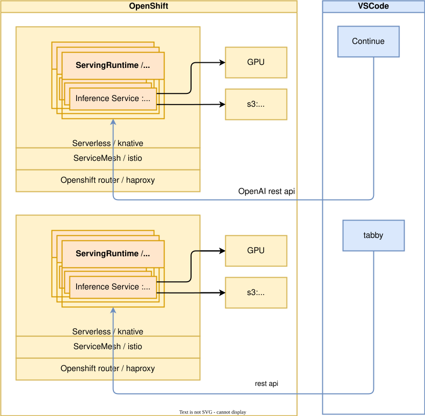
实验准备
openshift集群需要部署
- hostpath provisioner
- 这个并不一定，看你的实验环境是否有其他的存储方案
- nvidia gpu operator
- normal user created (htpasswd)
- image registry backed by storage
- openshift pipeline
- openshift servicemesh
- openshift serverless
- openshift ods ( openshift ai )
auto install service mesh and serverless
by now, it is ocp ai 2.5, you can auto install service mesh and serverless
- https://access.redhat.com/documentation/en-us/red_hat_openshift_ai_self-managed/2.5/html/working_on_data_science_projects/serving-large-language-models_serving-large-language-models#about-the-single-model-serving-platform_serving-large-language-models
openshift ai会使用knative(serverless)的方式暴露服务，默认是https方式，作者还不知道怎么配置弄成http方式暴露，https方式暴露，就涉及到证书问题，需要弄一个合法的通配符证书。
注意，https方式暴露服务，还有一个问题，就是odf相关服务，需要在单独的一个namespace里面，也就是用ods来创建这个namespace，之后这个namespace就不要干别的了。否则会和openshift router冲突。
镜像制作
我们为了在ocp ai上运行，需要准备对应的镜像，当然，根据实施时候的方法不同，需要的镜像也不一样，我们的实验环境没有S3，所以我们就搞一个自带S3服务的容器镜像。
S3 for codellama 13B
本地已经有模型文件了，就编译带S3服务的镜像，然后推送到镜像仓库。
# on 105
mkdir -p /data/workspace/s3.codellama
cd /data/workspace/s3.codellama
rsync -P -ar /data/huggingface/CodeLlama-13b-Instruct-hf /data/workspace/s3.codellama/
rm -f /data/workspace/s3.codellama/CodeLlama-13b-Instruct-hf/*.safetensors
cd /data/workspace/s3.codellama
cat << 'EOF' > Dockerfile
FROM quay.io/cloudservices/minio:RELEASE.2021-06-17T00-10-46Z.hotfix.35a0912ff as minio-examples
EXPOSE 9000
ARG MODEL_DIR=/data1/models
USER root
RUN useradd -u 1000 -g 0 modelmesh
RUN mkdir -p ${MODEL_DIR}
RUN chown -R 1000:0 /data1 && \
chgrp -R 0 /data1 && \
chmod -R g=u /data1
COPY --chown=1000:0 CodeLlama-13b-Instruct-hf ${MODEL_DIR}/CodeLlama-13b-Instruct-hf
USER 1000
EOF
podman build -t quaylab.infra.wzhlab.top:7443/wangzheng422/qimgs:minio-codellama-13-instruct-hf -f Dockerfile .
podman push quaylab.infra.wzhlab.top:7443/wangzheng422/qimgs:minio-codellama-13-instruct-hfdeploy on ocp
我们把S3服务部署到ocp上面，在ocp内部就可以访问到这个S3服务了。
oc new-project llm-demo
oc label --overwrite ns llm-demo \
pod-security.kubernetes.io/enforce=privileged
# on helper
S3_NAME='codellama'
S3_NS='llm-demo'
S3_IMAGE='quaylab.infra.wzhlab.top:7443/wangzheng422/qimgs:minio-codellama-13-instruct-hf'
cat << EOF > ${BASE_DIR}/data/install/s3-codellama.yaml
---
apiVersion: v1
kind: Service
metadata:
name: minio-${S3_NAME}
spec:
ports:
- name: minio-client-port
port: 9000
protocol: TCP
targetPort: 9000
selector:
app: minio-${S3_NAME}
---
apiVersion: route.openshift.io/v1
kind: Route
metadata:
name: s3-${S3_NAME}
spec:
to:
kind: Service
name: minio-${S3_NAME}
port:
targetPort: 9000
---
apiVersion: apps/v1
kind: Deployment
metadata:
name: minio-${S3_NAME}
labels:
app: minio-${S3_NAME}
spec:
replicas: 1
selector:
matchLabels:
app: minio-${S3_NAME}
template:
metadata:
labels:
app: minio-${S3_NAME}
spec:
containers:
- args:
- server
- /data1
env:
- name: MINIO_ACCESS_KEY
value: admin
- name: MINIO_SECRET_KEY
value: password
image: ${S3_IMAGE}
imagePullPolicy: IfNotPresent
name: minio
nodeSelector:
kubernetes.io/hostname: "worker-01-demo"
securityContext:
allowPrivilegeEscalation: false
capabilities:
drop:
- ALL
runAsNonRoot: true
seccompProfile:
type: RuntimeDefault
---
apiVersion: v1
kind: Secret
metadata:
annotations:
serving.kserve.io/s3-endpoint: minio-${S3_NAME}.${S3_NS}.svc:9000 # replace with your s3 endpoint e.g minio-service.kubeflow:9000
serving.kserve.io/s3-usehttps: "0" # by default 1, if testing with minio you can set to 0
serving.kserve.io/s3-region: "us-east-2"
serving.kserve.io/s3-useanoncredential: "false" # omitting this is the same as false, if true will ignore provided credential and use anonymous credentials
name: storage-config-${S3_NAME}
stringData:
"AWS_ACCESS_KEY_ID": "admin"
"AWS_SECRET_ACCESS_KEY": "password"
---
apiVersion: v1
kind: ServiceAccount
metadata:
name: sa-${S3_NAME}
secrets:
- name: storage-config-${S3_NAME}
EOF
oc create -n llm-demo -f ${BASE_DIR}/data/install/s3-codellama.yaml
# oc delete -n llm-demo -f ${BASE_DIR}/data/install/s3-codellama.yaml
# open in browser to check
# http://s3-codellama-llm-demo.apps.demo-gpu.wzhlab.top/minio/models/
# http://s3-codellama-llm-demo.apps.demo-gpu.wzhlab.top/minio/models/CodeLlama-13b-Instruct-hf/
S3 for tabby 13B
同样的，我们制作一个tabby的S3服务镜像，然后部署到ocp上面。
# on 105
cd /data/workspace/tabby
cat << 'EOF' > Dockerfile
FROM quay.io/cloudservices/minio:RELEASE.2021-06-17T00-10-46Z.hotfix.35a0912ff as minio-examples
EXPOSE 9000
ARG MODEL_DIR=/data1/
USER root
RUN useradd -u 1000 -g 0 modelmesh
RUN mkdir -p ${MODEL_DIR}
RUN chown -R 1000:0 /data1 && \
chgrp -R 0 /data1 && \
chmod -R g=u /data1
COPY --chown=1000:0 models ${MODEL_DIR}/models/models
USER 1000
EOF
podman build -t quaylab.infra.wzhlab.top:7443/wangzheng422/qimgs:minio-tabby-v01 -f Dockerfile .
podman push quaylab.infra.wzhlab.top:7443/wangzheng422/qimgs:minio-tabby-v01deploy on ocp
tabby S3服务部署到ocp上面，在ocp内部就可以访问到这个S3服务了。
# on helper
S3_NAME='tabby'
S3_NS='llm-demo'
S3_IMAGE='quaylab.infra.wzhlab.top:7443/wangzheng422/qimgs:minio-tabby-v01'
cat << EOF > ${BASE_DIR}/data/install/s3-tabby.yaml
---
apiVersion: v1
kind: Service
metadata:
name: minio-${S3_NAME}
spec:
ports:
- name: minio-client-port
port: 9000
protocol: TCP
targetPort: 9000
selector:
app: minio-${S3_NAME}
---
apiVersion: route.openshift.io/v1
kind: Route
metadata:
name: s3-${S3_NAME}
spec:
to:
kind: Service
name: minio-${S3_NAME}
port:
targetPort: 9000
---
apiVersion: apps/v1
kind: Deployment
metadata:
name: minio-${S3_NAME}
labels:
app: minio-${S3_NAME}
spec:
replicas: 1
selector:
matchLabels:
app: minio-${S3_NAME}
template:
metadata:
labels:
app: minio-${S3_NAME}
spec:
containers:
- args:
- server
- /data1
env:
- name: MINIO_ACCESS_KEY
value: admin
- name: MINIO_SECRET_KEY
value: password
image: ${S3_IMAGE}
imagePullPolicy: IfNotPresent
name: minio
nodeSelector:
kubernetes.io/hostname: "worker-01-demo"
securityContext:
allowPrivilegeEscalation: false
capabilities:
drop:
- ALL
runAsNonRoot: true
seccompProfile:
type: RuntimeDefault
---
apiVersion: v1
kind: Secret
metadata:
annotations:
serving.kserve.io/s3-endpoint: minio-${S3_NAME}.${S3_NS}.svc:9000 # replace with your s3 endpoint e.g minio-service.kubeflow:9000
serving.kserve.io/s3-usehttps: "0" # by default 1, if testing with minio you can set to 0
serving.kserve.io/s3-region: "us-east-2"
serving.kserve.io/s3-useanoncredential: "false" # omitting this is the same as false, if true will ignore provided credential and use anonymous credentials
name: storage-config-${S3_NAME}
stringData:
"AWS_ACCESS_KEY_ID": "admin"
"AWS_SECRET_ACCESS_KEY": "password"
---
apiVersion: v1
kind: ServiceAccount
metadata:
name: sa-${S3_NAME}
secrets:
- name: storage-config-${S3_NAME}
EOF
oc create -n llm-demo -f ${BASE_DIR}/data/install/s3-tabby.yaml
# oc delete -n llm-demo -f ${BASE_DIR}/data/install/s3-tabby.yaml
# open in browser to check
# http://s3-tabby-llm-demo.apps.demo-gpu.wzhlab.top/minio/models/
# http://s3-tabby-llm-demo.apps.demo-gpu.wzhlab.top/minio/models/TabbyML/image for simple openai service
ocp ai使用的是基于knative架构的serving runtime和inference service架构，它要求是的每个LLM运行实例，都能提供api对外服务，那么我们之前的那种fastchat架构就太复杂了，我们就需要worker就可以。经过研究，发现vLLM是现在通用的方法，并且也是大量项目使用的后端模型加载工具。
try on cli
我们先用命令行的方式验证一下。
# on 105
mkdir -p /data/env/
conda create -y -p /data/env/openllm python=3.10
conda init bash
conda activate /data/env/openllm
# conda deactivate
# pip install -U openllm
pip install -U vllm
# openllm start --backend vllm --debug /data/huggingface/CodeLlama-13b-Instruct-hf
python -m vllm.entrypoints.openai.api_server \
--served-model-name CodeLlama-13b-Instruct-hf \
--model /data/huggingface/CodeLlama-13b-Instruct-hf
vllm provides docker image
- https://docs.vllm.ai/en/latest/serving/deploying_with_docker.html
- docker.io/vllm/vllm-openai:latest
在 openshift ai 上部署
完事具备，我们就开始在ocp ai上部署了。
for codellama
创建 ServingRuntime
openshift ai默认带的serving runtime，用的是caikit-tgis， 对外接口是grpc模式， url path也和普通的openai api不一样，我们就需要自定义一个新的ServingRuntime，来承载LLM，对外保留openai API接口。
找了半天，发现vLLM整合我意，并且意外的（情理之中），红帽官方的实验项目也更新了，也提到了使用vLLM来做一个新的ServingRuntime承载大语言模型。
- https://github.com/rh-aiservices-bu/llm-on-openshift/blob/main/vllm_runtime/README.md
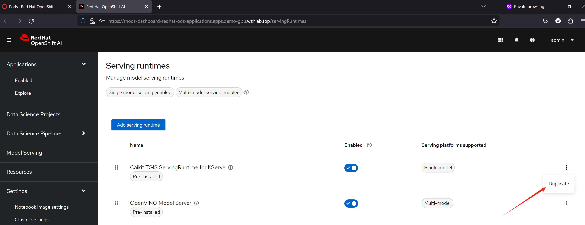
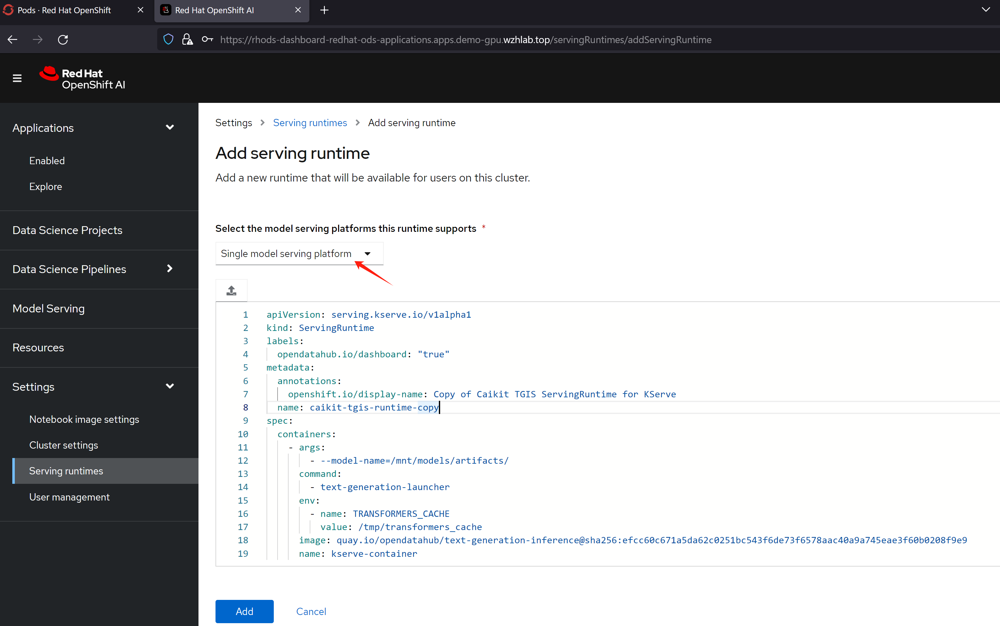
把yaml内容，替换成下面的，保存就可以了。
apiVersion: serving.kserve.io/v1alpha1
kind: ServingRuntime
labels:
opendatahub.io/dashboard: "true"
metadata:
annotations:
openshift.io/display-name: vllm-runtime
name: vllm-runtime
spec:
builtInAdapter:
modelLoadingTimeoutMillis: 900000
containers:
- args:
- --served-model-name
- CodeLlama-13b-Instruct-hf
- --model
- /mnt/models/
- --max-model-len
- "11200"
env:
- name: TRANSFORMERS_CACHE
value: /tmp/transformers_cache
- name: RUNTIME_LOCAL_MODELS_DIR
value: /mnt/models
- name: RUNTIME_GRPC_SERVER_THREAD_POOL_SIZE
value: "64"
image: docker.io/vllm/vllm-openai:latest
name: kserve-container
ports:
- containerPort: 8000
protocol: TCP
multiModel: false
supportedModelFormats:
- autoSelect: true
name: pytorch部署模型
在部署模型之前，我们定义一个S3存储，用来给应用提供大模型文件。
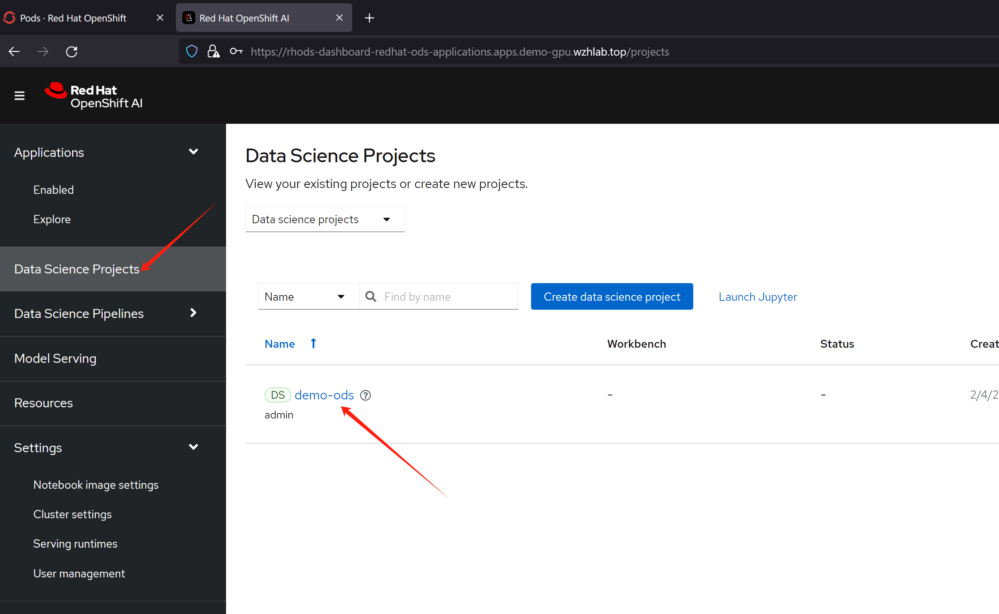
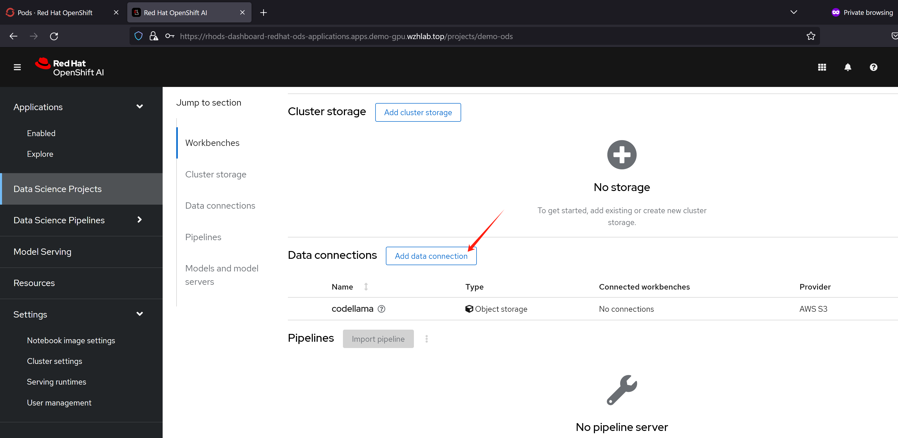
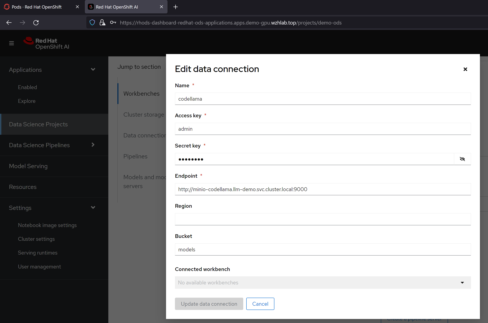
然后，我们就可以使用我们定义的servingruntime, s3存储，来定义一个模型服务了。
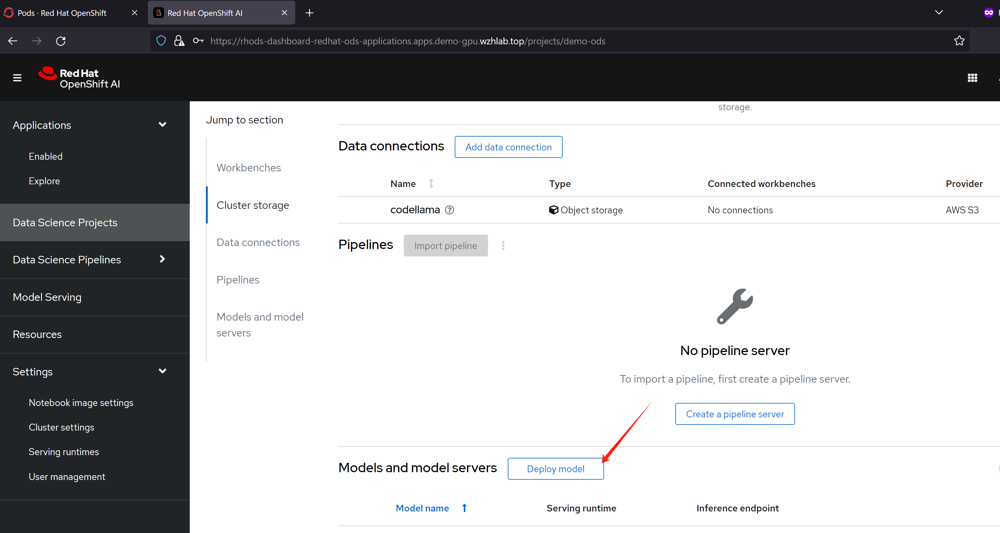
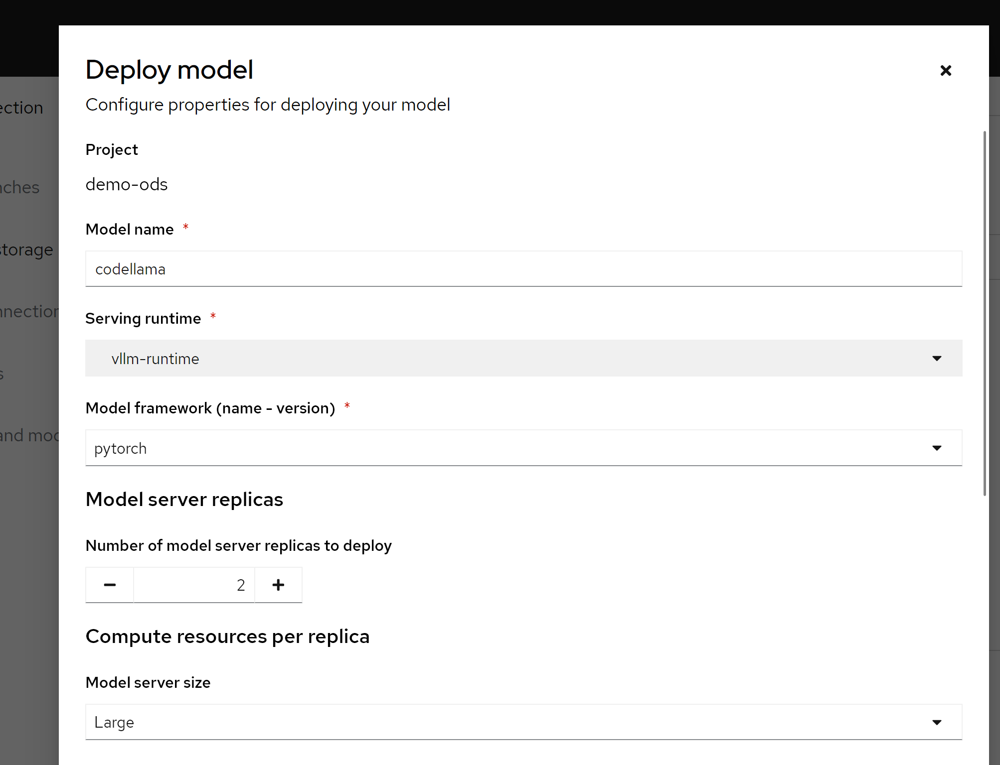
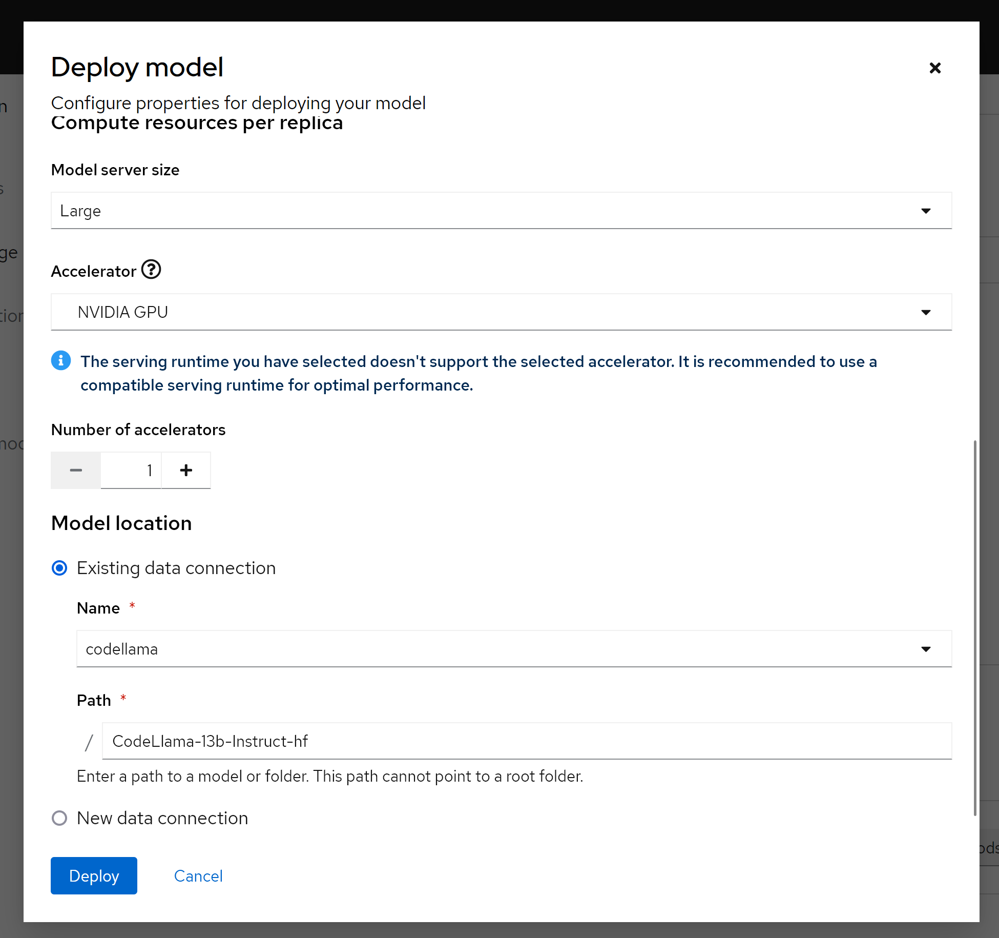
保存以后，我们就能看到，他通过knative，创建了一个服务。
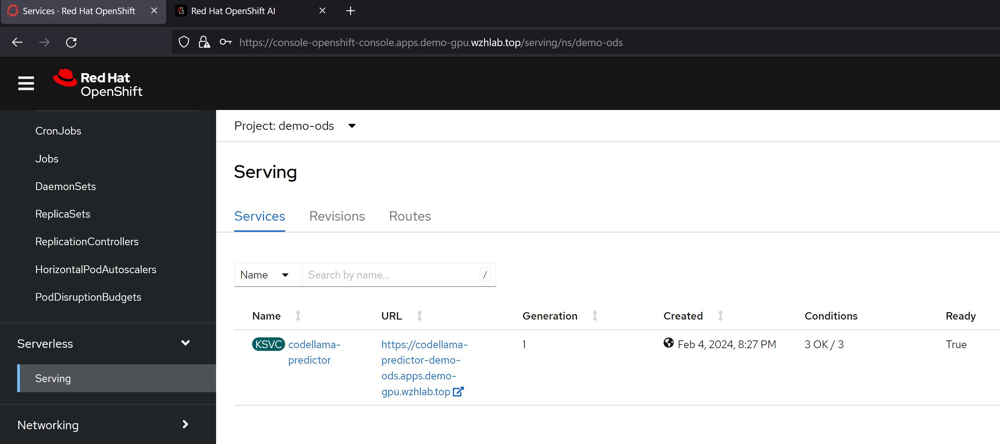
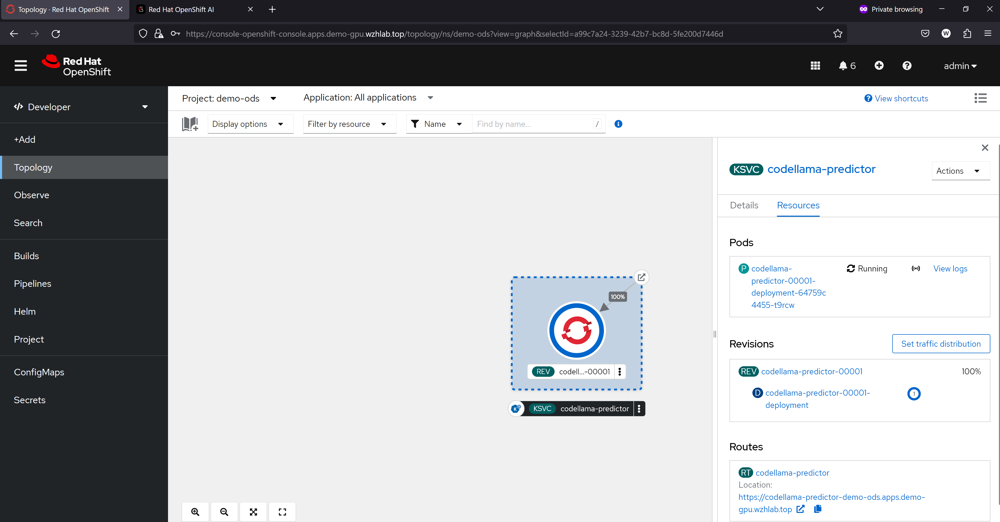
我们可以通过pod里面的container看到，ocp ai因为集成了knative，所以里面有多个sidecar proxy，这个是knative的特色，在LLM场景下面，由于流量不大，这种架构性能损耗就可以不用考虑，而这个架构带来的部署和管理的灵活性，就能大大的发挥出来了。
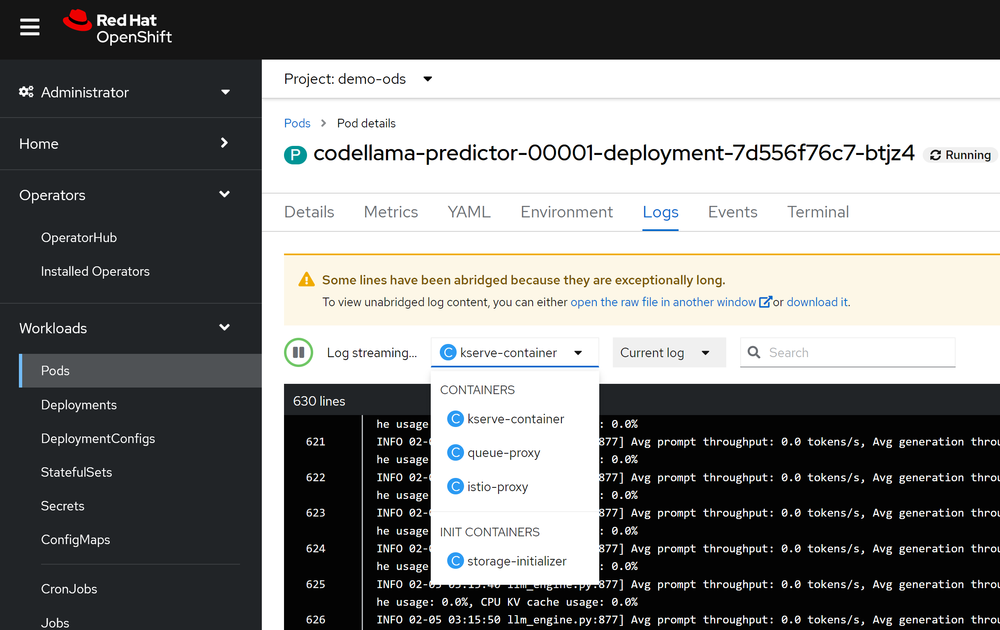
效果体验
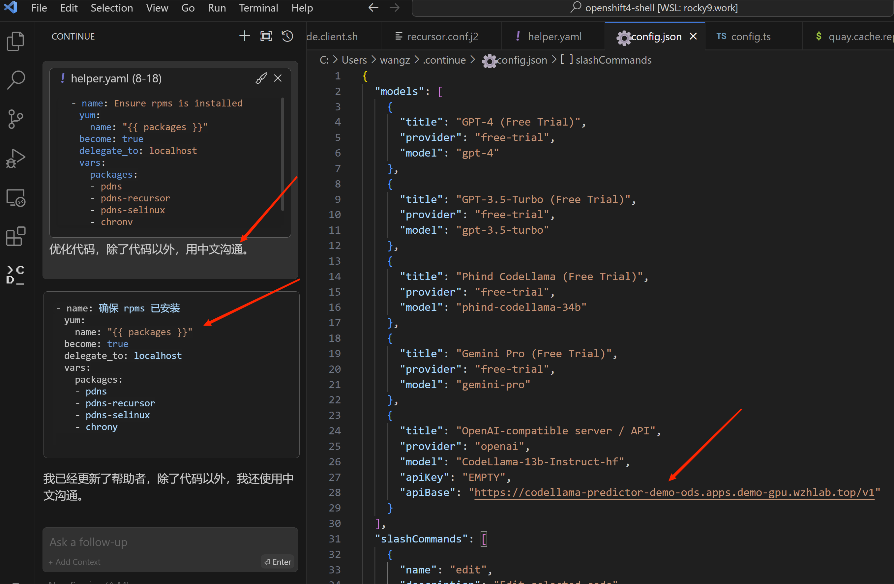
for tabby
创建 ServingRuntime
apiVersion: serving.kserve.io/v1alpha1
kind: ServingRuntime
labels:
opendatahub.io/dashboard: "true"
metadata:
annotations:
openshift.io/display-name: tabby-runtime
name: tabby-runtime
spec:
builtInAdapter:
modelLoadingTimeoutMillis: 900000
containers:
- name: kserve-container
command: [ "/bin/bash","-c","--" ]
args: ["rm -rf /data/*; mkdir -p /data/models; cp -R /mnt/models/TabbyML /data/models/; /opt/tabby/bin/tabby serve --model TabbyML/CodeLlama-13B --device cuda" ]
image: docker.io/tabbyml/tabby
imagePullPolicy: IfNotPresent
env:
- name: TRANSFORMERS_CACHE
value: /tmp/transformers_cache
- name: RUNTIME_LOCAL_MODELS_DIR
value: /mnt/models/
- name: RUNTIME_GRPC_SERVER_THREAD_POOL_SIZE
value: "64"
ports:
- containerPort: 8080
protocol: TCP
volumeMounts:
- name: model-data
mountPath: "/data/"
volumes:
- name: model-data
emptyDir: {}
multiModel: false
supportedModelFormats:
- autoSelect: true
name: pytorch部署模型
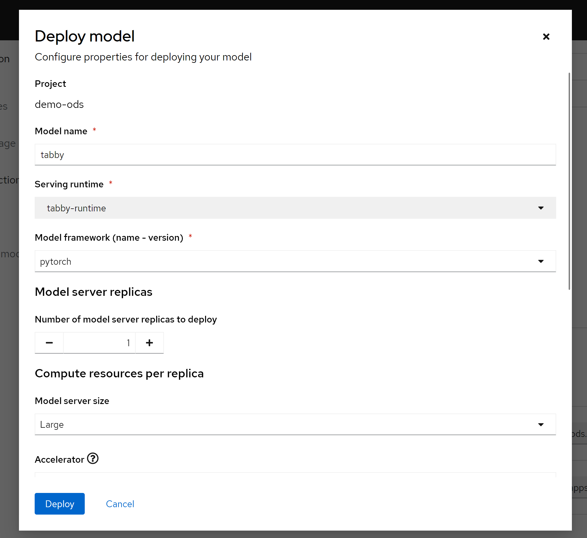
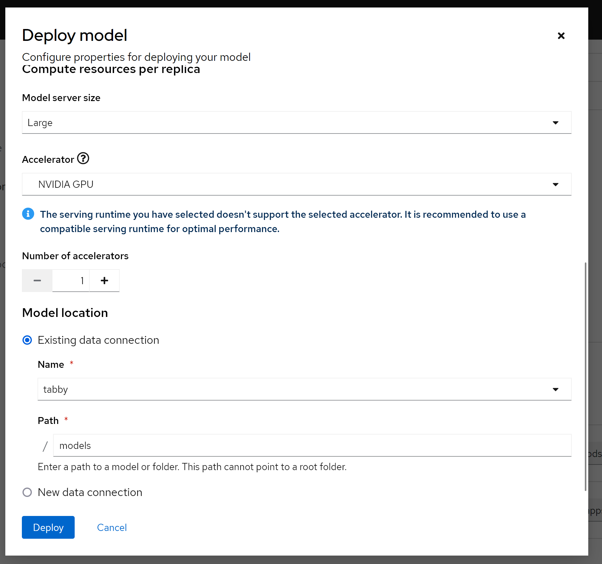
部署以后，就可以看到有两个knative serving了
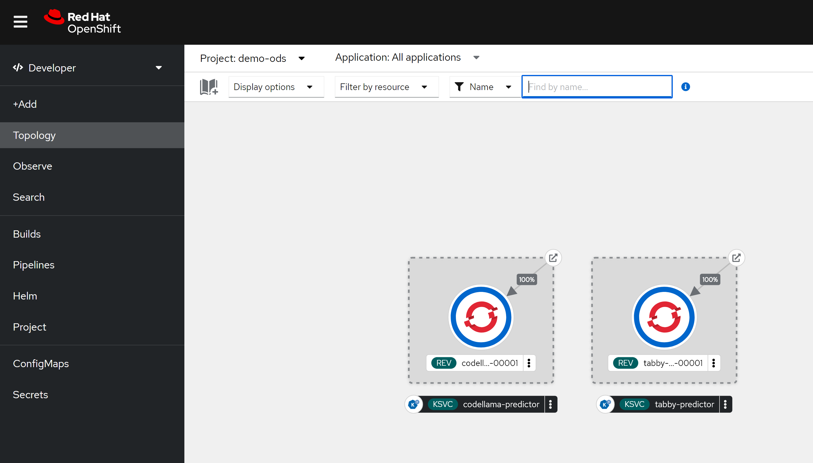
效果体验
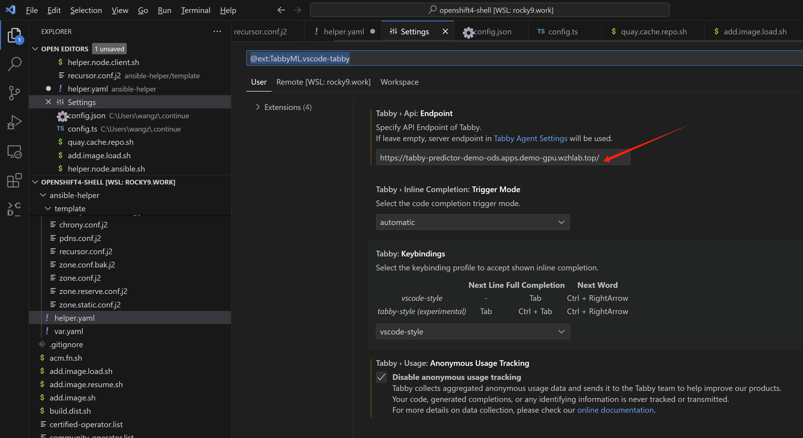
vscode里面的效果，跟之前的一样，就不截屏了。